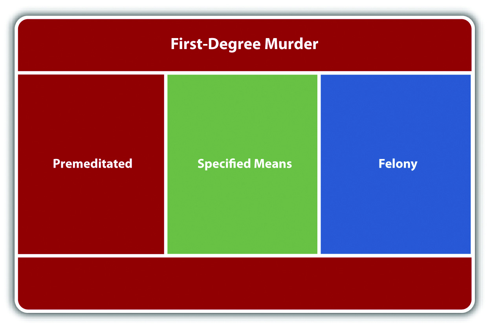
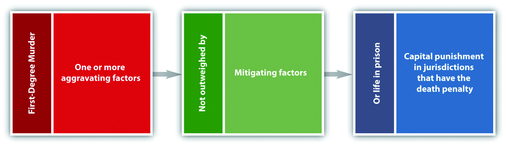

In this section, you analyze the factors that classify a murder as first-degree murderThe highest classification of murder; includes premeditated murder, serious felony murders, and murder by a specified means.. Keep in mind that the criminal act, criminal intent, causation, and harm elements of murder have already been discussed.
States and the federal government usually include premeditated murderA first-degree murder that combines specific intent to kill with calm planning and reflection., murder by a specified meansThe defendant uses a specific and heinous method to commit murder., and very serious felony murders in their first-degree murder statutes. Felony murder is discussed shortly.
Premeditated murder was originally and historically the predominant form of murder in any first-degree murder statute. A common statutory definition of first-degree premeditated murder is a willful, deliberate, premeditated killing.Mich. Comp. Laws § 750.316, accessed September 19, 2010, http://law.onecle.com/michigan/750-michigan-penal-code/mcl-750-316.html.
Most jurisdictions define willfulA term used in first-degree murder statutes that means a specific intent to kill. as a specific intent to kill, purposely, or express malice. Jurisdictions differ when interpreting deliberateA term used in first-degree murder statutes that means calm and methodical. and premeditatedA term used in first-degree murder statutes that means planned.. A minority of jurisdictions equate express malice or purposely with deliberation and premeditation, which means that the prosecution need only prove specific intent to kill for a first-degree premeditated murder conviction.Hawthorne v. State, 835 So. 2d 14 (2003), accessed September 19, 2010, http://scholar.google.com/scholar_case?case=6294577581180338458&hl=en&as_sdt=2&as_vis=1&oi=scholarr. However, this interpretation could blur the distinction between first and second-degree murder. The majority of jurisdictions have defined deliberate as calm and methodical, without passion or anger.People v. Anderson, 447 P.2d 942 (1968), accessed February 13, 2011, http://scholar.google.com/scholar_case?case=9215896464929219588&q= definition+of+deliberate+premeditated+murder&hl=en&as_sdt=2,5. Premeditated generally means the defendant reflected on the act or planned ahead.People v. Cole, 95 P.3d 811 (2004), accessed February 13, 2011, http://scholar.google.com/scholar_case?case=18037950298665209340&q= definition+of+deliberate+premeditated+murder&hl=en&as_sdt=2,5. In other words, if the defendant specifically intends to kill the victim and rationally, purposefully, takes steps that culminate in the victim’s death, the defendant has committed first-degree premeditated murder in many jurisdictions.
Often it is the act itself that proves the killing was willful, deliberate, and premeditated. If the killing is carried out in a manner that indicates a strong and calculated desire to bring about the victim’s death, the trier of fact can and often does conclude that the murder was premeditated.State v. Snowden, 313 P.2d 706 (1957), accessed September 19, 2010, http://scholar.google.com/scholar_case?case=16193283019378884065&hl=en&as_sdt=2&as_vis=1&oi=scholarr.
Most jurisdictions agree that an extended period of time is not a requirement of premeditation.Commonwealth v. Carroll, 412 Pa. 525 (1963), accessed February 18, 2010, http://scholar.google.com/scholar_case?case=13694151174720667465&hl=en&as_sdt=2&as_vis=1&oi=scholarr. Thus a murder can be premeditated and first degree even if it is conceived only moments before the actual killing.State v. Schrader, 302 SE 2d 70 (1982), accessed September 19, 2010, http://scholar.google.com/scholar_case?case=287453315188864266&hl=en&as_sdt=2&as_vis=1&oi=scholarr. Some jurisdictions do not require any appreciable time lapse between the formation of intent and the criminal act.State v. Snowden, 313 P.2d 706 (1957), accessed September 19, 2010, http://scholar.google.com/scholar_case?case=16193283019378884065&hl=en&as_sdt=2&as_vis=1&oi=scholarr.
Imagine that Joannie and her husband Tim are in a terrible fight in the kitchen. Tim tells Joannie that he is going to get a divorce and will thereafter seek full custody of their two young children. Joannie states, “Wait here. I need to go to the bathroom. I will be right back.” She walks down the hall, but goes into the bedroom, rather than the bathroom, and removes a handgun from the nightstand drawer. She then walks to the bathroom and flushes the toilet. Hiding the handgun in the pocket of her bathrobe, she walks back into the kitchen, removes it, and shoots Tim four times in the abdomen, killing him.
In this scenario, Joannie probably could be convicted of premeditated murder in most jurisdictions. Joannie shoots and kills Tim in a calm, methodical manner, evidencing deliberation. Her manufactured excuse and flushing of the toilet indicate planning. The act of shooting Tim four times shows that Joannie has a specific intent to kill and a strong and calculated desire to bring about Tim’s death. Note that timing is not an issue here. Even a few minutes are enough to carry out a premeditated murder if the proper facts are present.
Compare the previous example with this scenario. Frank, Dillon’s supervisor, calls Dillon into his office and fires him. Enraged, Dillon grabs a heavy brass paperweight from the top of Frank’s desk and strikes him in the forehead, killing him instantly. In this example, Dillon acts in anger, not calm, cool, reflection. The act of grabbing a heavy brass paperweight appears impulsive, not planned. There is no evidence to indicate that Dillon knew he would be fired or knew that there was a brass paperweight on Frank’s desk. In addition, the single blow to the head does not necessarily indicate that Dillon had a strong and calculated desire to kill Frank. Dillon’s conduct may be supported by murder intent (most likely implied malice, knowingly, or recklessly under circumstances manifesting extreme indifference to the value of human life), but there is no evidence of specific intent to kill, deliberation, or premeditation. Thus Frank’s killing would probably not be first-degree premeditated murder in most jurisdictions.
Murder by a specified means is a specific method of killing that is extremely heinous. Most states list the specified means in their first-degree murder statutes. Some examples of commonly included specified means are murder by drive-by shooting, destructive device like a bomb, weapon of mass destruction, ammunition designed to puncture a bulletproof vest, poison, torture, or lying in waitAn ambush-style killing., which is an ambush-style killing.Cal. Penal Code § 189, accessed February 18, 2010, http://law.onecle.com/california/penal/189.html. Note that all the aforementioned methods of killing involve premeditation to a certain extent and could also probably qualify as first-degree premeditated murder.
Figure 9.3 Diagram of First-Degree Murder
Most states divide murder into first and second degree.N.R.S. § 200.030, accessed February 13, 2011, http://law.onecle.com/nevada/crimes/200.030.html. Some states add a third degree of murder that generally includes less serious sentencing options.Pa. Cons. Stat. Ann. § 2502, accessed February 14, 2010, http://wings.buffalo.edu/law/bclc/web/pa2501.html. The Model Penal Code classifies all murders as felonies of the first degree (Model Penal Code § 210.2(2)).
First-degree murder is the highest classification of murder and results in the most extreme punishment available in a jurisdiction’s punishment scheme. If the jurisdiction allows for the death penalty, first-degree murder typically is the only crime against an individual that qualifies the defendant for execution.N.R.S. § 200.030(4) (a), accessed February 13, 2011, http://law.onecle.com/nevada/crimes/200.030.html. If the jurisdiction does not allow for the death penalty, first-degree murder often qualifies the defendant for life in prison.Mich. Comp. Laws § 750.316, accessed February 13, 2011, http://law.onecle.com/michigan/750-michigan-penal-code/mcl-750-316.html.
The US Supreme Court has held that criminal homicide is the only crime against an individual that can merit the death penalty.Kennedy v. Louisiana, 128 S. Ct. 2641 (2008), accessed September 21, 2010, http://www.law.cornell.edu/supct/html/07-343.ZO.html. A discussion of crimes against the government (such as treason) that merit the death penalty is in Chapter 13 "Crimes against the Government".
In states that allow capital punishment, first-degree murder with one or more aggravating factorA factor that may enhance the sentence for first-degree murder to the death penalty if the state allows for the death penalty.(s) is generally a capital offense. Examples of aggravating factors are killing more than one person, killing for financial gain, killing with a particularly heinous method, or killing a peace officer.Death Penalty Information Center, “Aggravating Factors for Capital Punishment by State,” accessed September 23, 2010, http://www.deathpenaltyinfo.org/aggravating-factors-capital-punishment-state. In general, the trier of fact must ensure that the aggravating factor(s) are not outweighed by mitigating factorA factor that may reduce a sentence from the death penalty to incarceration if it outweighs any aggravating factor(s).(s). Examples of mitigating factors are the youth of the defendant, the defendant’s lack of a criminal history, and the fact that the defendant was acting under extreme emotional or mental disturbance.Death Penalty Information Center, “Terry Lenamon’s List of State Death Penalty Mitigation Statutes,” accessed September 23, 2010, http://www.jdsupra.com/post/documentViewer.aspx?fid=d61d8c7b-896b-4c1a-bd87-f86425206b45.
Figure 9.4 Diagram of Capital Punishment
A jury convicted Scott Peterson of first-degree premeditated murder for the killing of his pregnant wife Laci Peterson. They also convicted him of second-degree murder for the killing of his unborn son Conner.Charles Montaldo, “Scott Peterson Guilty of first-degree murder,” About.com website, accessed July 15, 2010, http://crime.about.com/od/news/a/scott_peterson.htm. The governing statute was California Penal Code § 189.Cal. Penal Code § 189, accessed July 15, 2010, http://law.onecle.com/california/penal/189.html. After issuing the verdict, the jury sentenced Peterson to death based on the special circumstance of killing more than one person.Charles Montaldo, “The Peterson Verdict: Special Circumstances,” About.com website, accessed July 15, 2010, http://crime.about.com/od/news/a/scott_verdict.htm.
The prosecution was successful without direct evidence or proof of the cause of death.Charles Montaldo, “Scott Peterson Guilty of first-degree murder,” About.com website, accessed July 15, 2010, http://crime.about.com/od/news/a/scott_peterson.htm.
Congress was inspired by the Peterson case to pass the Unborn Victims of Violence Act, 18 U.S.C. § 1841,18 U.S.C. § 1841, accessed February 13, 2010, http://crime.about.com/gi/o.htm?zi=1/XJ&zTi=1&sdn=crime&cdn=newsissues&tm=435&gps=634_398_1276_788&f=10&tt= 2&bt=0&bts=0&zu=http%3A//www.nrlc.org/Unborn_Victims/UVVAEnrolled.html. creating the new federal crime of killing an unborn child.
Answer the following questions. Check your answers using the answer key at the end of the chapter.